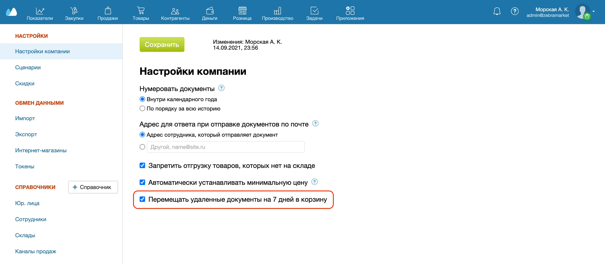
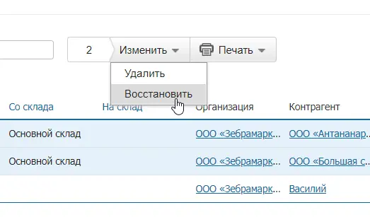
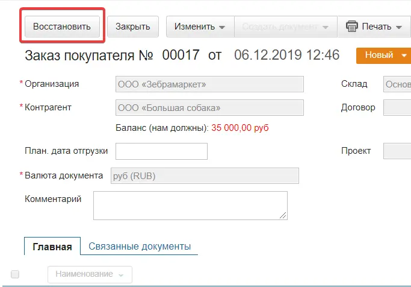
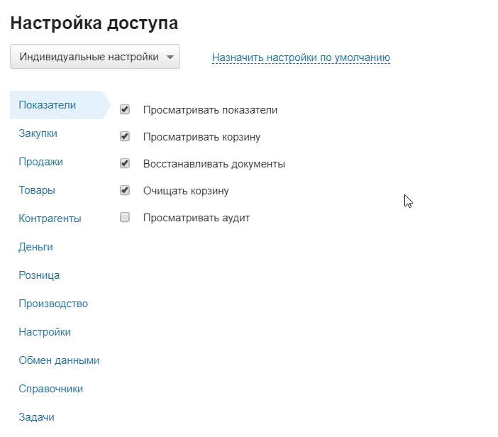

В Корзине (Показатели → Корзина) можно просматривать удаленные документы и при необходимости восстанавливать их. Корзину лучше держать включенной, чтобы защитить важные документы от случайного удаления.
Включение корзины
- Пройдите в раздел Меню пользователя → Настройки → Настройки компании.
- Поставьте флажок рядом с пунктом Перемещать удаленные документы на 7 дней в корзину.
- Нажмите на кнопку Сохранить.

Восстановление документов
- Пройдите в раздел Показатели → Корзина.
- Отметьте флажками документы, которые требуется восстановить.
- Нажмите кнопку Изменить и выберите пункт Восстановить в выпадающем списке.

Также можно открыть документ из Корзины и нажать на кнопку Восстановить в карточке самого документа. Отредактировать документ, хранящийся в корзине, нельзя.

Документы хранятся в корзине 7 дней. По истечении этого срока они автоматически удаляются. По желанию можно удалить все документы вручную по кнопке Очистить корзину.
Управление доступом
На тарифах с управлением правами доступ настраивается индивидуально для каждого сотрудника: вы сами решаете, кто сможет просматривать удаленные документы, восстанавливать их или очищать корзину.
